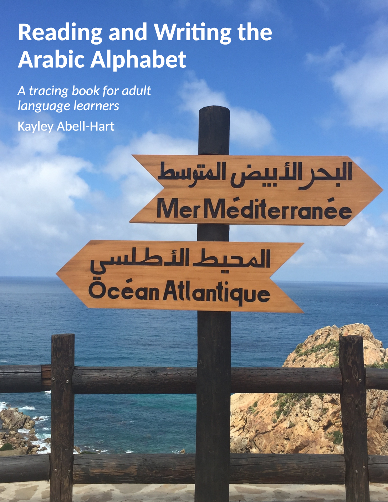

Around 2020, I noticed a lot of people were trying to learn Arabic through mobile apps, often as complete beginners. Arabic was added to Duolingo in late 2019, which helps explain the timing of this trend, but it's not the only one people were using in this way. These apps are an incredible resource, especially considering that they're available for free, but they're far from perfect. I noticed a lot of learners struggling with basic comprehension of the alphabet, not even being able to parse a written word into its component letters. I also saw them trying to practice handwriting by copying printed materials. Unfortunately, in Arabic, typeset fonts are very different from everyday handwritten style. They contain extra elements (think serifs in a serif font) that would be cumbersome to write by hand. So these folks were making a lot of extra work for themselves and producing very awkward-looking text. But how could they know any better, when the apps weren't teaching them how to write?
I took eight semesters of Arabic in college, and early on, the curriculum emphasized the four skills of learning a langauge: reading, writing, speaking, and listening. Every time we studied a new vocabulary word, we were encouraged to practice it in all four modalities. Mobile apps are an easy medium for reading and listening practice, but speaking and writing are often neglected, since they're much more difficult to incorporate.
And for me, learning to write was one of the most fun and rewarding parts of learning Arabic. You don't need to be a calligrapher to enjoy scribbling away in a beautiful cursive alphabet. So it hurt me to see so many people missing out, and also getting confused and stuck when their course materials built too high on a shaky foundation. I recommended to these folks that they find a tracing book to supplement their learning. Something that shows you each form of the letter and has you trace it, then copy it. This is how I first learned the Arabic alphabet, from the book Easy Arabic Script. But this book isn't free and I have some other criticisms of it that I won't go into here. Googling around for free resources, everything I found had major limitations, such as:
And like many people in 2020, I found myself stuck and home and looking for a good project. So I decided to try making such a resource myself. And voila, thus was born the mini-book "Reading and Writing the Arabic Alphabet: A tracing book for adult language learners" by Kayley Abell-Hart.
You can download the PDF (for free of course) at this link.